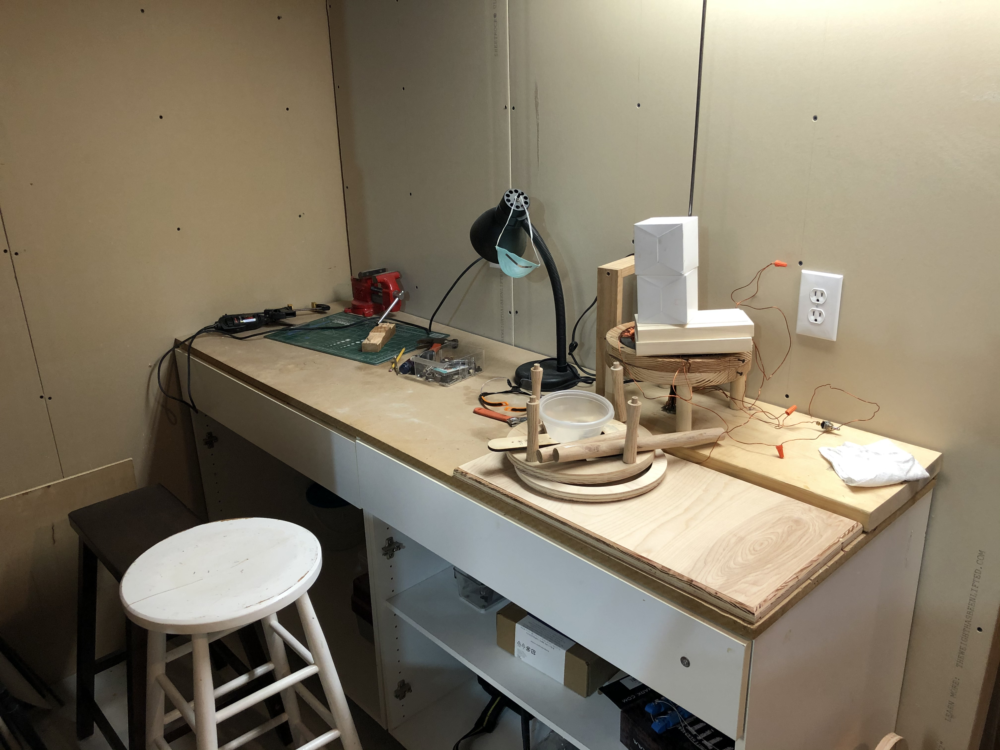

Making a Magnet: Postmortem

The dream of creating a powerful permanent magnet for our motor died unceremoniously with the implications of the growing global pandemic. However, we learned many lessons through trial-and-error which we hope to pass onto any future IQP team, or anyone attempting a similar project. We believe we were on the right track to make a working magnet in D term, but there were pitfalls that prevented us from doing so earlier.
Look at Historical Material
If you are looking to fashion your very own permanent magnet from a piece of iron, after a cursory Google, you'll find that magnet-making is not really a hobby. There are no strict how-to guides, and most information applies to how to create magnets with modern high-tech equipment. However, we found that there was a niche of experimenters in the 16th century (and even before!) that were devising a variety of methods to create artificial magnets. Some of these methods are more practical than others, but these historical sources were of greater use to us than any YouTube video out there, since, again, people do not seem to be home-brewing their own artificial magnets in the 21st century.
Take Modern "Shortcuts"
In our first term of attempts, we were focused on using methods that were close to what Thomas Davenport would have had in the early 19th century. In hindsight, we should have started with a "proof of concept" method of magnetizing iron with whatever means necessary, disregarding the fact that Thomas Davenport did not have an oxyacetylene torch. Even if you forgo the charcoal fire for a modern method of heating the metal, do not underestimate the task! There are still many variables to consider. If you are able to create a magnet in this way, then move forward by replacing parts of the methodology with more period-accurate technology.
Find Help
Doug Leonardi was a useful resource. He lent us materials that we were able to use for creating a magnet and gave us his opinion about our methodology. We should have made more of these contacts earlier in the process. WPI is a perfect place to start looking, so we encourage any future IQP team to reach out as much as possible, especially if the size of the team is only two.
Have a Fire Extinguisher Ready
Perhaps this tip doesn't belong in this post-mortem since we were mostly diligent about this, but we want to reiterate this for any future IQP team. If you're making a magnet, you are probably working with extreme heat that will melt or ignite most things that come close. Another note about the extreme heat—remember that the Curie temperature works two ways. It can add magnetization to metal, or remove it entirely. If you are using permanent magnets to create a third permanent magnet, you will need to find some way to bring the target metal to the Curie temperature while insulating the existing permanent magnets so they do not reach the Curie temperature, lose all magnetic properties and become useless. Our plan was to design and machine an aluminum rig for this before our plans were cut short.
Make a Magnet or a Motor (Not Both)
Making a magnet, for us, proved to be difficult. We destroyed a non-negligible amount of material we purchased and assembled for the purpose of attempting to create a magnet, including other magnets. Perhaps a future IQP could focus solely on the history of creating artificial permanent magnets, instead of creating a magnet as a component of a greater assemblage, as we were doing. This would take away the pressure of creating a magnet of the correct strength and shape for the motor, and instead let the IQP team focus on achieving the best results that are possible within the time frame. Hopefully reading our blog will give this future IQP team a head start!
Making a Motor: Post-mortem
In the end, we were not able to get the final motor spinning with the original armature. This was a combination of a few factors that we narrowed down through careful testing.
Lack of Magnetic Field Strength
With the 13V, 12A power supply that we had at our disposal, we were had great difficulty getting the outer electromagnets to be particularly strong when connected in series and in parallel, since both configurations were tested. By contrast, when connected to the power supply individually, the magnets were much stronger. We considered hooking up the motor to a car battery, but we were warned against this by Sam's uncle Bruce Johnson, who has worked with motors in the past. Parts of the motor were heating up considerably just when connected to the original power supply. We did not want to risk undoing all of our work by melting all of the important components.
Gauge of the Wires
We re-wound the outer electromagnets with 18 gauge magnet wire. The motor from the original IQP team had wound these outer magnets with 16 gauge wire, which is thicker. We believe that the diameter of the wire we chose to use was limiting the current. We would suggest that the next team experiment with a variety of gauges to determine what gives the strongest magnetic field. Thicker wire should allow the motor to be connected to a stronger power supply.
In the end, we unwound our 18 gauge magnet wire and wound 16 gauge magnet wire to see if this would make a significant difference. Unfortunately, this did not correct the issue we were having with low magnetic field strength.
Brushes
One component that was in question was the state of the brushes. The original IQP team had not soldered on the brushes. Instead, they opted to wind uncoated copper wire around the brushes so they stayed in place and conducted electricity. Because we were dubious about this, we added additional soldering in order to improve our chances. We purchased slot-car brushes in order to replace the old ones. However, the ended up being to small to use. We also purchased a sheet of copper from which we cut out strips to create brushes. We replaced the single brush that had snapped from the original motor with this.
Shape of Outer Magnets
The issue with magnets is that their strength drastically falls off with distance. Because the outer magnets formed a less-than-perfect circumference for our motor, the distance from the armature varied. With a more consistent distance around the circumference, we might have been able to get the armature to pull towards the poles of the outer magnet. We were not able to get this behavior with our setup, likely due to the varying distance from the armature and the lack of field strength.
What We Learned
We learned many new techniques in woodworking and electrical engineering throughout the project. It was also interesting to dive into the history of electric motors and artificial magnets; this is something we likely would never have encountered if we did not undertake this project. One of the best parts about the project was that it gave us the opportunity to get our hands dirty, so to speak, allowing us to try out all of the things we read about with regard to motors and magnets. We encountered many unique problems, and although we didn't overcome them all, this alone was a valuable experience.